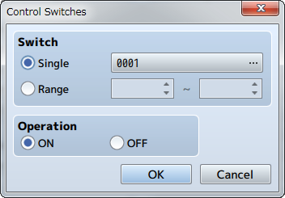
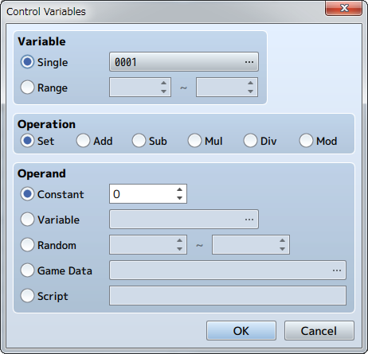
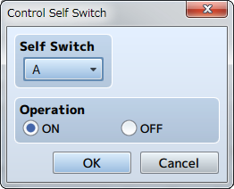
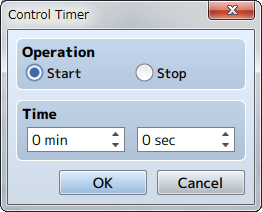

Game Progression
Control Switches

Function
Changes the values (ON/OFF) of switches.
Settings
- Switch
- Specifies the switch to change. Select [Single] when controlling one switch, and specify the target switch. Select [Range] when wanting to change the values of a group of switches, and specify the number range of the switches.
- Operation
- Specifies the value (ON/OFF) to store in the switch.
Control Variables

Function
Changes the value stored in a variable.
Settings
- Variable
- Specify the variable of the value you want to change. Select [Single] when controlling one variable, and specify the target variable. Select [Range] when wanting to change the values of a group of variables, and specify the number range of the variables.
- Operation
- Specify how the numbers will be calculated (refer to remarks). The variable calculated in [Variable] will change will change based on the value before the operation, method of calculation, and the operand.
- Operand
- Specifies the operand used for the [Operation] calculation (refer to remarks).
Remarks
- Details regarding the method of calculation specified under [Operation] are as follows.
Set Sets the value of the operand (no calculation). Add Sets a value calculated using [variable value before operation + operand]. Sub Sets a value calculated using [variable value before operation - operand]. Mul Sets a value calculated using [variable value before operation x operand]. Divide Sets a value calculated using [variable value before operation ÷ operand]. Mod Sets a value which is the remainder of [variable value before operation ÷ operand]. - Details regarding [Operand] are as follows. These can be set from -99999999 to 99999999).
Constant Uses a fixed value. Specify the value in the right field. Variable Uses a variable. Specify the variable to reference. Random Uses a random (number chosen randomly) value. Range of the random value that can be generated (-99999999 to 99999999) Game Data Uses a value related to the play state of the game. Specify the information to reference in the window that opens when you click [...](refer below). Script Use the result evaluated as JavaScript for the value. - When selecting [Game Data] as the [Operand], the type of data which the operand will be evaluated as will be one of the following.
Item Uses the possession count of the specified item. Weapon Uses the possession count of the specified weapon. Armor Uses the possession count of the specified armor. Actor Uses the actor's parameter (HP, MP, etc.) as the value. Specifies the target actor and parameter. Enemy Uses the enemy's parameter (HP, MP, etc.) as the value. Specifies the target enemy and parameter. This is only effective during battle. Character Uses values such as the coordinates and direction of the player or events. Map X, Map Y ：Map coordinates of current location Direction ：Current direction (up = 8 / left = 4 / right = 6 / down = 2) Screen X, Screen Y ：Uses the display position coordinates on the screen (pixels) Party Uses the ID of the actor at the specified position in the party. Other Uses all other data.
Control Self Switch

Function
Controls the value of self switches.
Settings
- Self Switch
- Specify the target self switch (A through D).
- Operation
- Specifies the value (ON/OFF) to store in the switch.
Remarks
- This cannot be used in battle events.
Control Timer

Function
Start/stop the timer that calculates the time limit (time remaining). Starting the timer will cause the time remaining to be displayed at the top right of the screen. The timer will temporarily stop (will not be calculated) while the menu is displayed. To branch a process using the time left on the timer, use the [Conditional Branch] event command.
Settings
- Operation
- Select [Start] to start calculating the time limit and select [Stop] to stop calculating it.
- Time
- In the case that [Start] was selected under [Operation], specify the time limit (0 minutes, 0 seconds to 99 minutes, 59 seconds).